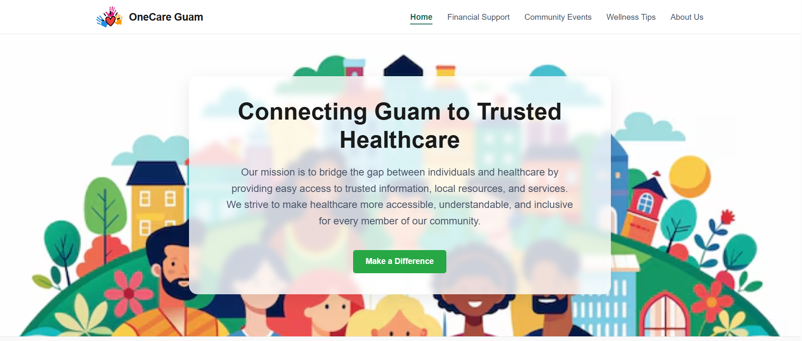

MY COMMUNITY CONTRIBUTION ♡
Making a Difference Through Technology
I had the opportunity to create a website for Todu Guam, designed to help individuals and families in need explore available medical assistance and healthcare resources in Guam. Through this project, I wanted to make important information more accessible to those who need it.
A LITTLE REFLECTION ♡
My Role & What I Learned
My Role
I contributed to creating the Todu Guam website by helping develop a platform where people can easily explore medical assistance and healthcare resources available in Guam.
What I Learned
This experience helped me improve my creativity, problem-solving, and web development skills. It also taught me how technology can be used to make useful information more accessible to others.
WEB DEVELOPMENT PROJECT
OneCare Guam

I created a website for Todu Guam to help individuals and families in need find and explore available medical assistance and healthcare resources throughout Guam. This project allowed me to use technology to support and give back to the community.
Visit my Website | Click Here! ♡